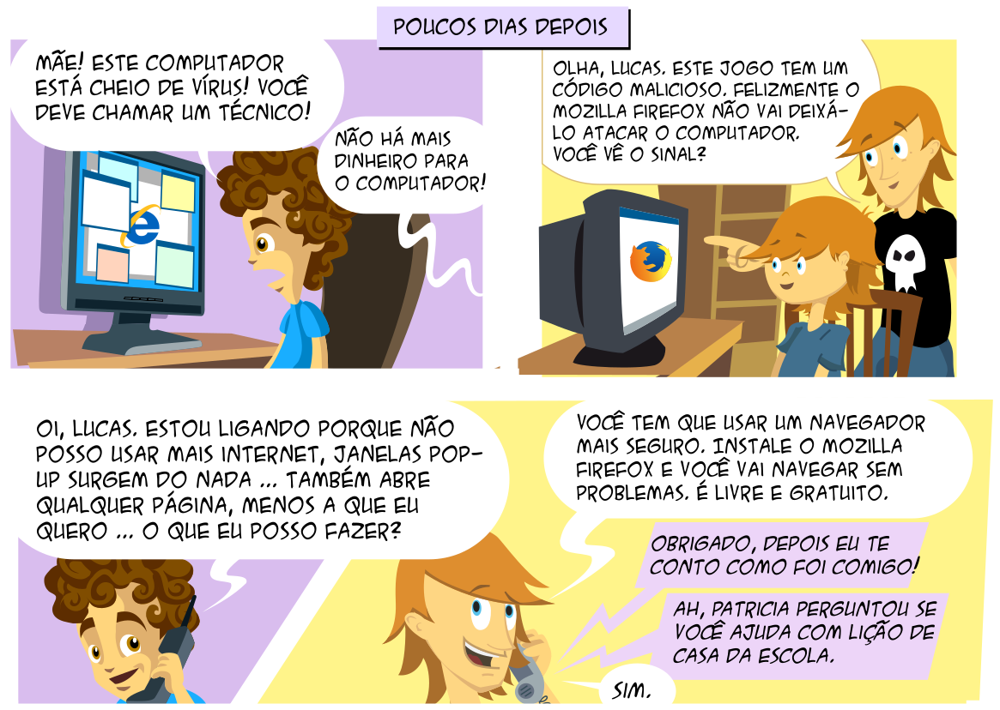
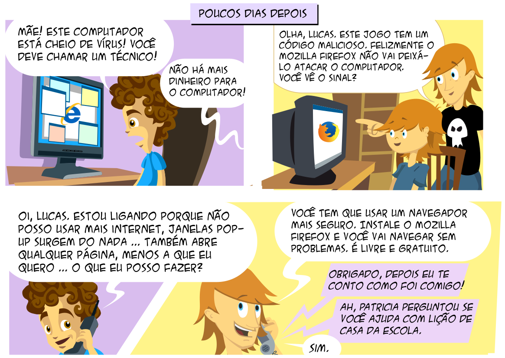
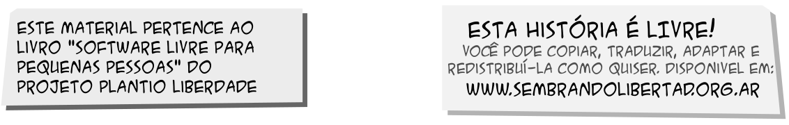
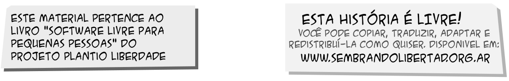

Capítulo 5
Semeando Liberdade
Como (e onde) o software livre inclui as pessoas
O que é Software Livre
Por “software livre” devemos entender aquele software que respeita a liberdade e senso de comunidade dos usuários. Grosso modo, isso significa que os usuários possuem a liberdade de executar, copiar, distribuir, estudar, mudar e melhorar o software. Assim sendo, “software livre” é uma questão de liberdade, não de preço. Um programa é software livre se os usuários possuem as quatro liberdades essenciais:
- A liberdade de executar o programa como você desejar, para qualquer propósito (liberdade 0).
- A liberdade de estudar como o programa funciona, e adaptá-lo às suas necessidades (liberdade 1). Para tanto, acesso ao código-fonte é um pré-requisito.
- A liberdade de redistribuir cópias de modo que você possa ajudar ao próximo (liberdade 2).
- A liberdade de distribuir cópias de suas versões modificadas a outros (liberdade 3). Desta forma, você pode dar a toda comunidade a chance de beneficiar de suas mudanças. Para tanto, acesso ao código-fonte é um pré-requisito.


 


 

O que é Tecnologia Social
Segundo Dagnino (2004, p. 193), tecnologia social é (ou deveria ser) a denominação para uma tecnologia:
- Adaptada a pequeno tamanho físico e financeiro;
- Não-discriminatória (patrão-empregado);
- Orientada para o mercado interno de massa;
- Liberadora do potencial e da criatividade do potencial e da criatividade do produtor direto;
- Capaz de viabilizar economicamente os empreendimentos autogestionários e as pequenas empresas.
Para saber mais:
[Programando o Futuro] (https://www.slideshare.net/programandoofuturo/tecnologia-social)
O que é Inclusão Digital
Segundo Mori (2011, p. 40), “as compreensões de ‘inclusão digital’ podem ser aglutinadas em três vertentes:
a)‘inclusão digital’ como acesso;
b)‘inclusão digital’ como “alfabetização digital”; e
c)’inclusão digital’ como apropriação de tecnologias.”
As três vertentes como verbos:
- Ter
- Usar
- Apropriar-se (dominar, controlar)
Inclusão Digital como Acesso
Segundo Mori (2011, p. 40), “tem como foco a garantia do acesso à infraestrutura de TICs. Uma característica desta abordagem é utilizar como indicador principal de ‘inclusão digital’ a disseminação de bens e serviços relacionados à informática e às telecomunicações.”
Inclusão Digital como Alfabetização Digital
Segundo Mori (2011, p. 40), “a característica principal desta segunda abordagem compreende a infraestrutura tecnológica como algo similar ao lápis e ao papel para quem não é alfabetizado.”
Inclusão Digital como Apropriação de Tecnologias
Segundo Mori (2011, p. 41), “a terceira vertente considera como efetivo objetivo da ‘inclusão digital’ a apropriação das TICs, e não apenas a capacidade de uso básico que a ‘alfabetização digital’ proporciona. Defende que exista não apenas acesso à infraestrutura e ‘alfabetização digital’, mas processos mediante os quais as pessoas sejam capazes de compreender o significado dos meios técnicos e digitais, reinventar seus usos e não se constituir como meros consumidores”.
Exclusão Digital
Segundo Bastos, Kaneko, Napolitano e Reis (2012), "a exclusão digital é uma das muitas formas de manifestação da exclusão social". Para eles, "ser excluído digitalmente é não ter acesso à informação, conhecimento, opiniões e tecnologias." Os autores citam uma frase de Pierre Lévy: "Toda nova tecnologia cria seus excluídos".
Uso da Tecnologia da Informação para Fins Sociais
Inclusão Digital X Inclusão Social
Inclusão social é oferecer oportunidades iguais de acesso a bens e serviços a todos.
Uma das vertentes da inclusão digital é a garantia do acesso à infraestrutura de TICs.
Inclusão digital pode ser um instrumento para inclusão social.
A Questão
Como (e onde) o software livre inclui as pessoas?
Digitalmente?
Socialmente?
Em qualquer um dos casos, isso é suficiente?
Software Livre
“Nós fazemos campanha por essas liberdades porque todo mundo merece. Com essas liberdades, os usuários (tanto individualmente quanto coletivamente) controlam o programa e o que ele faz por eles. Quando os usuários não controlam o programa, o programa controla os usuários. O desenvolvedor controla o programa e, por meio dele, controla os usuários. Esse programa não livre é “proprietário” e, portanto, um instrumento de poder injusto”. (GNU PROJECT)
Soberania Tecnológica
“¿O es que un estado que tenga sus finanzas, salud, educación, … en manos de corporaciones tecnológicas puede decir que es independiente? ¿o que sus datos están seguros? ¿o que controla su tecnología?”. (RAMÓN)
Referências bibliográficas
BASTOS, Caio Gomide. KANEKO, Flávia Yukimi. NAPOLITANO, Guilherme. REIS, Thiago de Barros. Inteligência Coletiva e Inclusão Digital. 2012. Disponível em https://pt.slideshare.net/thiagodbr/inteligncia-coletiva-e-incluso-digital-12520004.
DAGNINO, Renato. A tecnologia social e seus desafios. Tecnologia social: uma estratégia para o desenvolvimento. Fundação Banco do Brasil. Rio de Janeiro : 2004
GNU PROJECT. What is free software? Disponível em http://www.gnu.org/philosophy/free-sq.html. Acesso em 11 out 2017.
MORI, Cristina Kiomi. Políticas públicas para inclusão digital no Brasil: aspectos institucionais e efetividade em iniciativas federais de disseminação de telecentros no período 2000-2010. Tese (Doutorado em Política Social) – Instituto de Ciências Humanas. Universidade de Brasília, 2011.
RAMÓN, Ramón. Soberania Nacional e Independencia Tecnológica: Soberanía Tecnológica. Disponível em https://pt.slideshare.net/ramonramonsa/soberania-tecnologica-fisl14